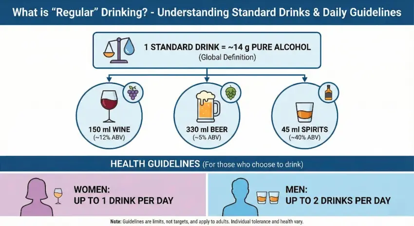
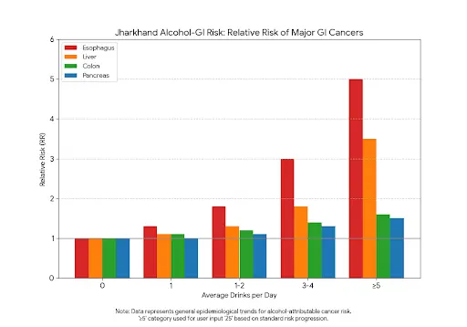
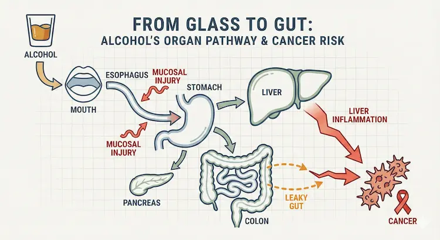
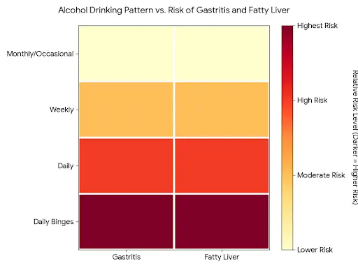
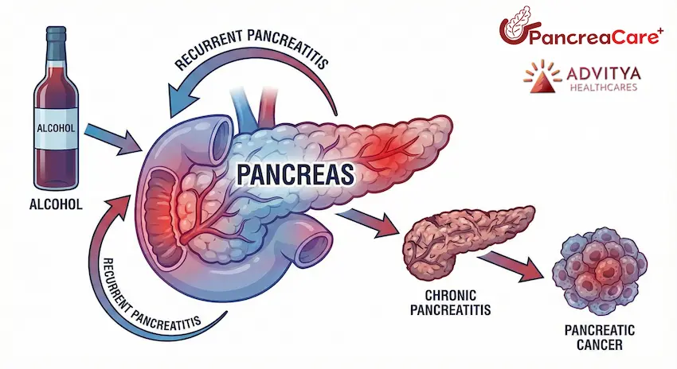
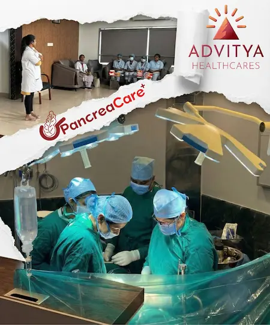

Alcohol is woven into social life – from weekend drinks to daily “stress relief.” But the digestive system (gastrointestinal or GI tract) sees every sip first.
In Jharkhand – especially in cities like Ranchi, Bokaro and Dhanbad – alcohol is often part of social life, celebrations and stress relief. But our digestive system (gut or GI tract) “sees” every sip first. Over months and years, even regular “social drinking” can quietly damage the gut, liver and pancreas and increase the risk of several gastrointestinal (GI) cancers.
At PancreaCare by Advitya Healthcares, we see this impact every week in patients coming with acidity, pancreatitis, fatty liver, cirrhosis and late-diagnosed GI cancers. This blog explains, in simple language, how dose, mode and frequency of alcohol use affect GI health, with a special focus on cancers.
What is “regular” drinking?
Globally, one standard drink is defined as about 14 g of pure alcohol (for example ~150 ml wine, 330 ml beer, or 45 ml spirits).
Health guidelines often suggest that, for those who choose to drink:
- Women: up to 1 drink per day
- Men: up to 2 drinks per day
This level is sometimes called “low–risk” for short-term harms – but for cancer, no level is completely safe. Alcoholic drinks are classified as a Group 1 carcinogen (same category as tobacco) and are linked to at least seven types of cancer, including several GI cancers.
From a practical perspective in Jharkhand, we can think of:
- Mild Drinking /Occasional – 1–2 drinks on some weekends
- Moderate Drinking / Irregular – 1–2 drinks on most days
- Severe Drinking / high Intensity – 3 or more drinks daily, or frequent binges (4–5+ drinks in one sitting)

The more you drink per day, the more often you drink, and the more years you drink, the higher the cumulative damage.
How alcohol harms the GI system
Every drink travels through the mouth → oesophagus → stomach → small intestine → liver → pancreas → colon. The body breaks alcohol down into a toxic chemical called acetaldehyde, which can directly damage cells and DNA.
Key mechanisms:
- Direct lining (mucosal) injury
- Even one heavy episode can cause inflammation and small erosions in the stomach and upper intestine, leading to gastritis, pain and sometimes bleeding.
- “Leaky gut” and microbiome disturbance
- Alcohol damages tight junctions (proteins that hold gut cells together), making the intestine more permeable or “leaky”.
- Bacterial toxins cross into the blood and reach the liver, increasing inflammation, fatty liver and cirrhosis risk.
- Liver injury
- Regular use causes a spectrum from fatty liver → alcoholic hepatitis → cirrhosis, and cirrhosis is a major driver of liver cancer (hepatocellular carcinoma).
- Pancreatic injury
- Heavy long-term alcohol is a leading cause of acute and chronic pancreatitis. Repeated inflammation damages the pancreas and raises the risk of pancreatic cancer over time.
Dose, frequency & GI cancer: what studies show
Large international studies, including recent data up to 2025, show a dose–response relationship between alcohol and several GI cancers – meaning, as dose and frequency increase, so does risk.
Esophageal cancer (especially squamous cell)
- Even modest regular use increases risk, especially when combined with smoking, which is still common in Jharkhand.
- Strong spirits taken neat, very hot drinks, and daily drinking further irritate the oesophageal lining.
Stomach (gastric) cancer
- Evidence suggests that frequent drinking – even if each sitting is not huge – raises the risk of stomach cancer, especially above roughly 3+ drinks per day.
Liver cancer
- For liver, stomach and pancreas, major cancer-prevention reports conclude that risks become clearly higher when average intake is above ~45 g alcohol/day (around 3 drinks).
- When alcohol-related cirrhosis is combined with hepatitis B/C, obesity or diabetes, liver cancer risk multiplies further – a pattern we often see in Eastern India.
Colorectal (colon & rectum) cancer
- A large meta-analysis shows that drinking more than 1 drink per day is associated with increased colorectal cancer risk.
- Mechanisms include acetaldehyde exposure in the colon, changes in gut bacteria, and low folate levels.
Pancreatic cancer – emerging evidence
- Chronic heavy alcohol use is a well-known cause of chronic pancreatitis, which itself increases pancreatic cancer risk.
- New pooled data from 30 international studies show a modest but significant increase in pancreatic cancer risk in people drinking from about 15–30 g/day upwards, with higher risk at higher doses, independent of smoking.
For people in Ranchi and Bokaro who drink daily or binge on weekends, this means that “regular but not very heavy” drinking is not risk-free, especially when combined with smoking, central obesity and high processed-food intake.
Why frequency matters as much as quantity
A large study on GI cancers found that drinking frequently (many days per week), even with small amounts, may be more dangerous than occasional heavier sessions for long-term cancer risk.
So two men in Ranchi who both consume the same total alcohol per week may have different risks:
- Person A: drinks a little every day → higher GI cancer risk
- Person B: drinks once a week but similar total weekly units → comparatively lower (though still not zero) risk
This is important because in Jharkhand many people feel “I only take 1–2 pegs daily, that is safe”. For cancer risk, regular exposure is the concern, not only visible drunkenness.
Mode of drinking: beer vs whisky vs local liquor
From a cancer perspective, the main villain is ethanol itself, not the brand:
- 2 large beers ≈ multiple small pegs of whisky in terms of pure alcohol.
- Locally brewed or unregulated liquor can add extra risk due to impurities and very high strength, but even “branded” drinks are risky when used regularly.
Drinks taken on an empty stomach, very fast, or in repeated shots cause more sudden spikes in alcohol level, which our pancreas and liver struggle to handle.
Suggested figures and diagrams (for your designers)
To visually communicate the intensity of use vs disease spectrum, you can include:
- Jharkhand alcohol–GI risk bar chart
- X-axis: average drinks/day (0, <1, 1–2, 3–4, ≥5)
- Y-axis: relative risk of major GI cancers (oesophagus, liver, colon, pancreas)
- Separate coloured bars for each organ.

- “From glass to gut” organ pathway diagram
- Simple outline of mouth, oesophagus, stomach, liver, pancreas, colon.
- Arrows showing: alcohol → mucosal injury → leaky gut → liver inflammation → cancer.

- Frequency vs risk heat map
- Rows: drinking pattern (monthly/occasional, weekly, daily, daily + binges).
- Columns: conditions (gastritis, fatty liver, pancreatitis, cirrhosis, GI cancers).
- Darker colours = higher risk.

- Pancreas spotlight figure branded as “PancreaCare”
- Pancreas in the centre with arrows: alcohol → recurrent pancreatitis → chronic pancreatitis → pancreatic cancer risk.
- PancreaCare logo and tagline near the figure to reinforce your specialty.

What people in Ranchi & Bokaro should watch for
People who drink regularly should be alert for red-flag symptoms and seek medical help early, especially if they notice:
- Persistent heartburn, difficulty swallowing, or vomiting
- Ongoing upper abdominal pain or pain radiating to the back
- Unintentional weight loss, low appetite or early fullness
- Black stools, blood in stools or vomiting blood
- Yellow eyes / skin (jaundice), dark urine or very pale stools
- Repeated attacks of severe upper abdominal pain with vomiting (suggestive of pancreatitis)
Residents of Jharkhand with family history of GI cancers, chronic liver disease, pancreatitis, diabetes or obesity have even more reason to reduce or stop alcohol.

Comprehensive Care: From Diagnosis to Recovery
At PancreaCare by Advitya Healthcares, we understand that a diagnosis of a liver or pancreatic condition can be overwhelming. Our mission is to provide not just treatment, but a complete care pathway that supports you at every step.Your digestive health demands expert attention. At PancreaCare, we combine medical expertise with compassionate care to treat the full spectrum of GI disorders.
We are equipped for:
GI Cancer Surgeries (Liver, Pancreas, GI Tract)
Advanced Laparoscopic Procedures
Management of Chronic Pancreatitis & Liver Disease
Preventive Screening & Oncology Care
Don’t wait for symptoms to worsen. Trust the specialists of gut. Visit us in Ranchi for a consultation today.
Book an in-person or video consult with PancreaCare By Advitya Healthcares in Ranchi, Jharkhand, Bokaro.
We’ll map your sequence—diagnostics → treatment → rehab → surveillance—and walk with you through every milestone.
Have a question this article does not answer?
Send us your reports. A specialist reviews them before you travel, so the first visit begins with a plan rather than a repeat test.